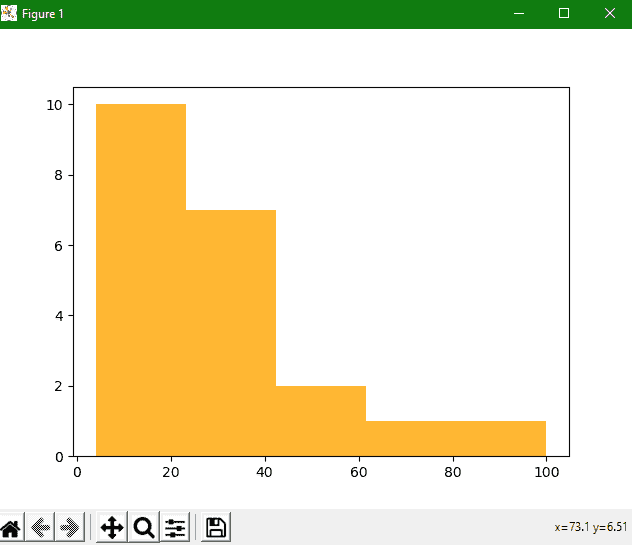
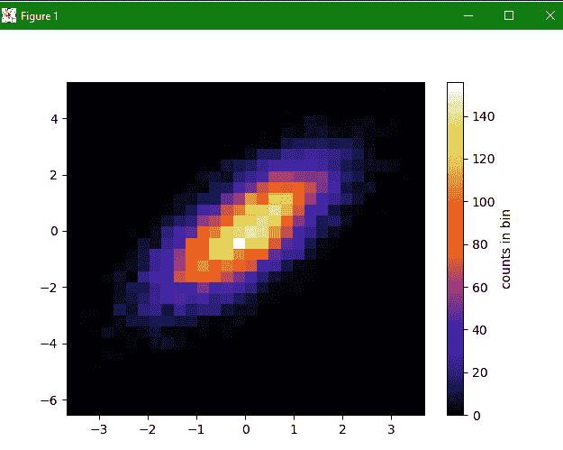

Matplotlib 直方图——hist()函数
原文：https://www.studytonight.com/matplotlib/matplotlib-histrograms-hist-function
在本教程中，我们将介绍如何使用 matplotlib 库在 Python 中创建直方图。
什么是直方图？
在深入研究如何在 matplotlib 中创建直方图之前，让我们首先了解什么是直方图？
所以直方图是数值数据的分布的精确表示。
所以直方图是条形图的一种，是由卡尔·皮尔逊发明的
直方图主要用于表示某些组中提供的数据。
直方图通常由数据仓(变量的连续和非重叠间隔)组成，其中每个仓由最小值和最大值组成。
为了估计连续变量的概率分布，使用直方图。
创建直方图
创建直方图时，应记住以下几个步骤:
第一步是创建范围的箱。
第二步是将数值的整个范围分配到一个对应的区间序列中。
第三步是统计每个区间的数值。
matplotlib.pyplot.hist()功能
该函数用于创建直方图。
让我们讨论直方图的参数，详细描述如下:
x
此参数指示数组或数组序列。
箱柜
此参数指示一个整数或序列或任何字符串。
密度
这是一个由布尔值组成的可选参数。
范围
这是一个可选参数，用于指示箱的上限和下限，也是一个可选参数。
标签
这是一个可选参数，用于在对数刻度上设置直方图轴。
颜色
这是用于设置颜色的可选参数。
累计
如果该选项的值设置为真，则计算直方图，其中每个箱给出该箱中的计数加上较小值的所有箱。
组态型
这是一个可选参数，用于指定直方图的类型[即条形、条形堆积、台阶、台阶填充 ]。该参数的默认值为“栏”。
对齐
这是一个可选参数，用于控制数值为[ 左、右、中 ]的直方图的绘制。
让我们看几个例子来理解直方图的概念。
简单直方图示例:
下面我们有一个创建直方图的简单示例:
import numpy as np
import matplotlib.mlab as mlab
import matplotlib.pyplot as plt
x = [21,22,23,4,5,6,77,8,9,10,31,32,33,34,35,36,37,18,49,50,100]
num_bins = 5
n, bins, patches = plt.hist(x, num_bins, facecolor='orange', alpha=0.8)
plt.show()
直方图形式的输出如下:

一个图形示例中的两个直方图:
让我们一起试试两个直方图的两个图。在下面给出的代码片段中，我们试图将两个直方图绘制在一起:
2D 直方图示例:
让我们尝试创建一个二维直方图。2D 直方图的代码片段如下:
import numpy as np
import matplotlib.pyplot as plt
mean = [0, 0]
cov = [[1, 1], [1, 2]]
x, y = np.random.multivariate_normal(mean, cov, 10000).T # x and y are array that are drawn from a multivariate Gaussian distribution
plt.hist2d(x, y, bins=30, cmap='CMRmap') #plt.hist2d is used to draw histogram for 2D
cb = plt.colorbar()
cb.set_label('counts in bin')
plt.show()
输出直方图如下:
